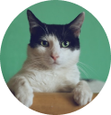

324 amigos na sua cidade
Leve a felicidade para o seu lar
Encontre o animal de estimação ideal para seu estilo de vida!
324 amigos na sua cidade
Encontre o animal de estimação ideal para seu estilo de vida!
🐕
O FindAFriend é um produto desenvolvido para você encontrar o animal de estimação ideal ao seu estilo de vida!
🐈
ONGs cadastram os bichinhos disponíveis para adoção informando características como: porte, nível de energia, nível de independência, sociabilidade e gênero.
🦮
Filtre os bichinhos de acordo com suas preferências e lifestyle. Depois é só entrar em contato com a ONG para agendar uma visita e conhecer pessoalmente seu match perfeito!
O FiendAFriend conecta pessoas que estão procurando por um animal de estimação com animais que precisam de um lar amoroso. É fácil de usar e você pode navegar por uma variedade de animais para encontrar aquele que melhor se adapta ao seu estilo de vida e necessidades.
Acesse agora